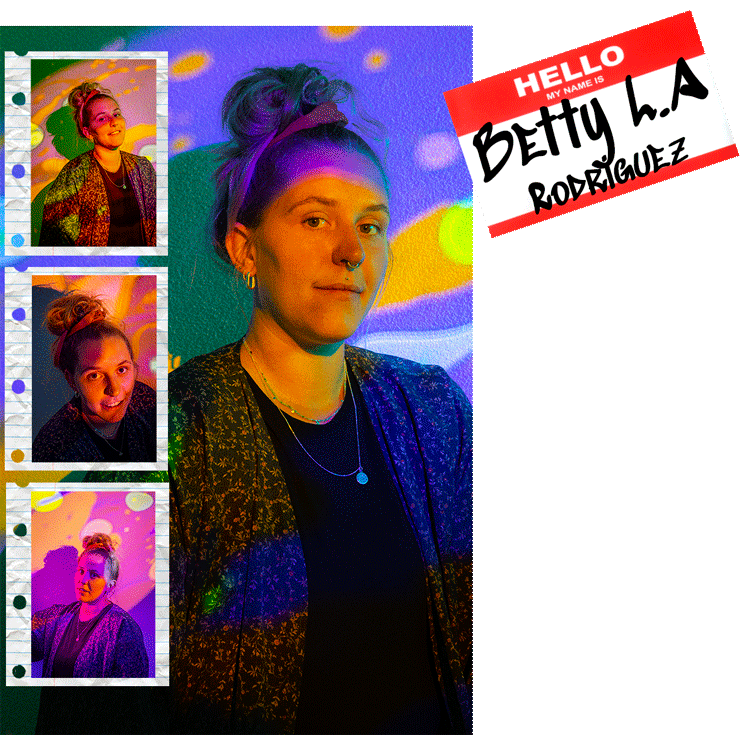
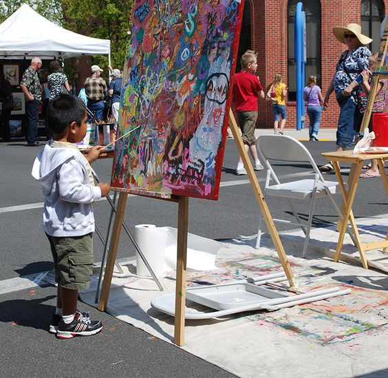
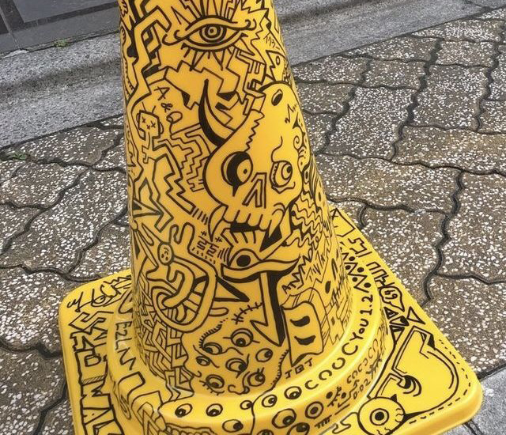
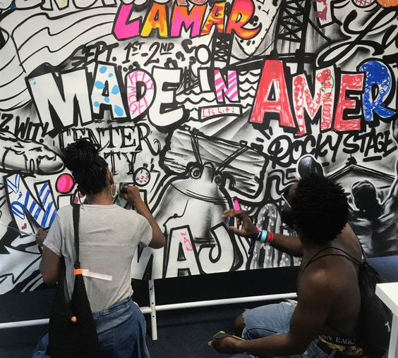
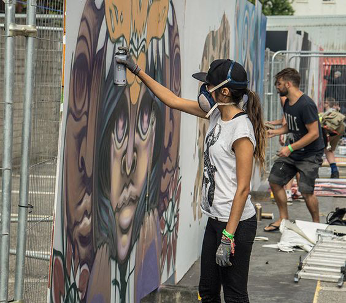
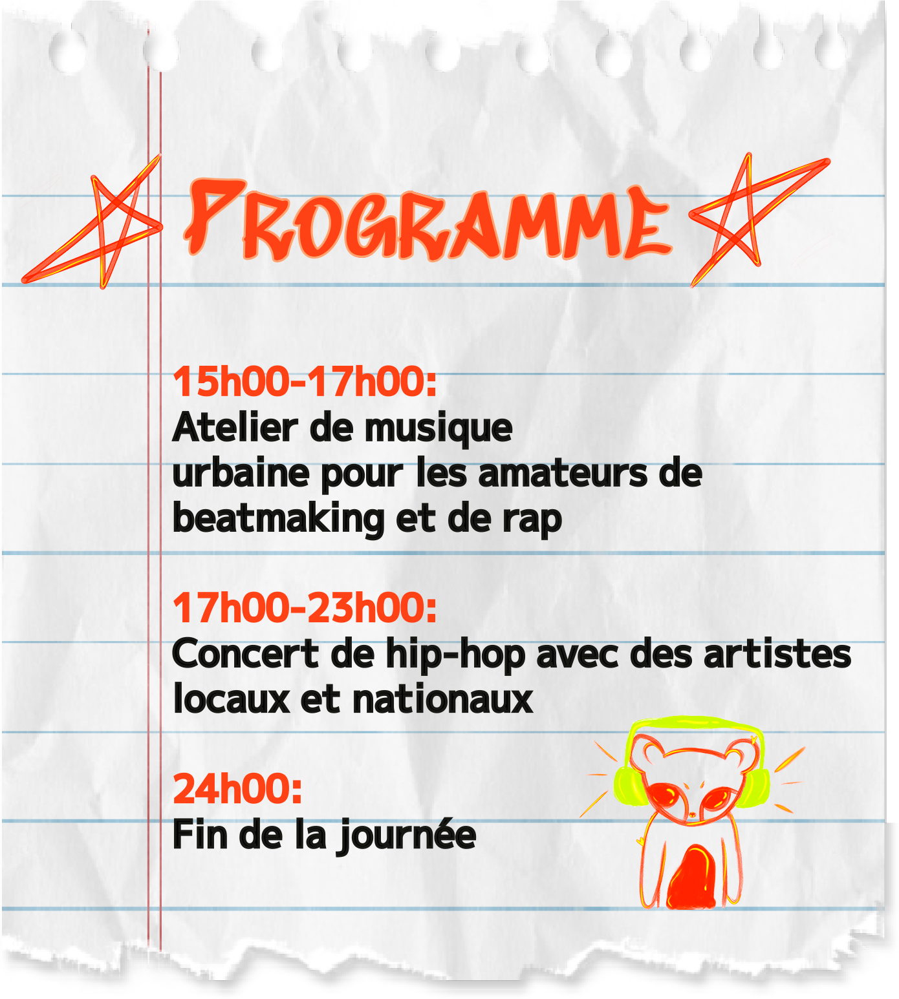
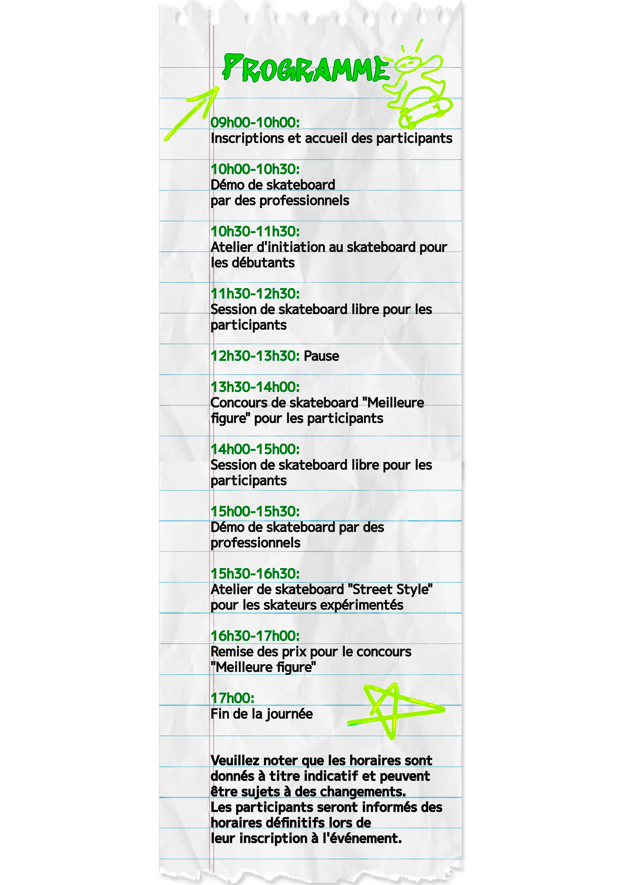
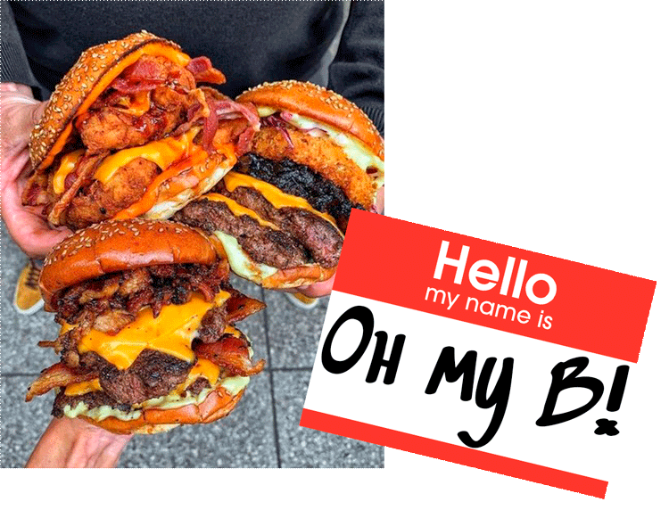

Le Festivale
Le 15 octobre 2023, Vevey célèbre les tendances actuelles en matière d'art urbain et de musique, et rassemble une communauté de pesonnes partageant les mêmes intérêts.
Notre événement offre une variété d'activités pour les visiteurs, notamment des démonstrations de skate réalisées par des professionnels, des ateliers de graffiti interactifs, des expositions d'œuvres d'art urbain innovantes et des performances musicales d'artistes locaux et internationaux.
Notre objectif est de créer un espace pour que les artistes de rue et les amateurs de culture urbaine puissent se rencontrer, partager leur savoir-faire et leur passion pour l'art urbain et s'immerger dans une ambiance urbaine unique.
Notre festival propose également une sélection de stands de restauration proposant une cuisine de rue authentique pour ravir les papilles des visiteurs.
Tag - Graffiti

Nous sommes ravis de présenter notre invité d'honneur pour le Street Jam Festival, le/la célèbre graffeur/graffeuse Benita X. Rodriguez
Originaire du quartier Baldwin Village, L.A, Californie au USA,
elle a commencé à expérimenter avec les bombes aérosols
à l'âge de 14 ans et a depuis créé une réputation internationale pour
son style unique et expressif.
Son travail est influencé par la culture hip-hop, la street culture et
l'art urbain contemporain, et est souvent caractérisé/e par des couleurs
vives, des formes organiques et des détails saisissants.
Betty L.A est une figure emblématique de la scène graffiti,
et son travail a été présenté dans des expositions du monde entier.
En plus de son travail de graffeur, il/elle est également un mentor
pour la jeune génération d'artistes urbains, organisant des ateliers
et partageant son expérience avec la communauté.
Nous sommes honorés d'accueillir Betty L.A en tant qu'invité/e d'honneur de notre festival urbain annuel, et nous sommes impatients de voir son talent en action lors de notre atelier de graffiti interactif. Les participants auront l'occasion d'apprendre directement d’elle, de découvrir son processus créatif et de s'inspirer de son travail unique.

- 
- 
- 
- 
Atelier Musique

Skateboard

Street Food
Notre festival vous propose une variété de stands de restauration sur place tout au long de la journée. Vous pourrez notamment découvrir ...
Un camion de restauration rapide proposant des burgers artisanaux avec des ingrédients frais et locaux.
Un stand proposant des tacos et des burritos à la viande grillée ou végétarienne, accompagnés de guacamole, de salsa et de sauces épicées.
Un stand proposant des hot-dogs traditionnels, avec une variété de garnitures et des frites fraîches et croustillantes.
Un stand proposant des bols de poke hawaïen, avec du poisson frais, du riz, des légumes,des fruits et des sauces savoureuses.
Un stand proposant des crêpes et des gaufres sucrées ou salées, avec une variété de garnitures comme des fruits frais, du Nutella, du fromage, des œufs et des légumes.
Un stand proposant des smoothies et des jus de fruits frais, avec des mélanges de saveurs originales et saines pour une pause gourmante et rafraîchissante.